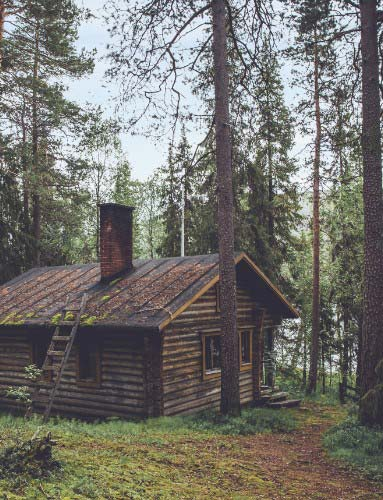
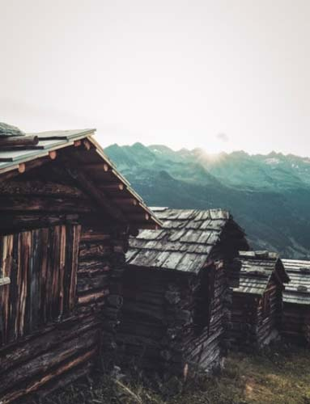

Our Cabins
There’s something universally appealing about a cabin: a quiet, well-lighted refuge in the middle of nature. Every corner of the world has its own take, from the mid-century
A-frame to the iconic Swiss chalet. CabinBnB has got you covered, at affordable prices, whether a family trip, romantic getaway, or a solo trip
-

Whispering Willows
This charming former schoolhouse from the mid-19th century has a separate sleeping
cabin and bathroom just big enough for two people. There's a nice stone fireplace, vintage furniture,
antique accent pieces, framed art, plus a large bucolic yard.
Cabin Info
-

Slumbering Willows
Dubbed Slumbering Willows Cabin, the home has timber walls, cathedral ceilings,
a rock fireplace, and skylights for natural light. A King-size bedroom is a treat, and modern touches
include contemporary light fixtures, and midcentury furnishings.
Cabin Info
-

Whispering Meadows
A tiny house seems tailor-made for a Catskills getaway, and this sweet home
feels especially idyllic. It's situated mere steps from a pond, wild mountain stream, and waterfall.
Bring your pup to this pet-friendly CabinBnB and warm up by the antique wooden stove.
Cabin Info
-

Slumbering Hollows
This CabinBnB also brings star power; it was featured on
Netflix's "Stay Here" home renovation show. The studio space is a cornucopia of eclectic design, bold
prints on pillows and throws with rustic mountain-inspired pieces like a farmhouse rocking chair.
Cabin Info
-

Dancing Meadows
This cabin has everything you're likely to hope for when picturing a log home: a
classic mahogany exterior, rich wood walls, beamed ceilings, and knotted pine fixtures. There's so much
wood in fact, that a few white walls almost look misplaced.
Cabin Info
-

Sleeping Tranquility
Located on a compound of similar standalone cabins that may also be rented, this
rural spot comes with excellent views of the Catskill mountains. Decorated in calming neutrals, the space
features a sitting area with a couch, large windows, a mini-fridge, and a coffee machine.
Cabin Info
-

Wintering Willows
This renovated 1920s fishing cottage on a creek has been reimagined as a dreamy
modern getaway while maintaining original elements such as beautiful wood floors and a river rock fireplace.
The towns of Phoenicia and Woodstock are close by.
Cabin Info
-

Slumbering Lakes
Nestled among towering pine trees on a one-acre property in the hamlet of Germantown,
this cabin packs plenty of character starting with a bright red door that pops against the white
exterior. Ideal for a couple or a solo traveler, this space is perfect for lake fishing.
Cabin Info
-

Winter's Landing
This studio is no-frills, perfect for the outdoor enthusiast who wants to
disconnect in order to reconnect. There is a Queen-size bed, a gas stove to keep warm in winter,
coffee maker, tea kettle, and organic coffee and tea are provided. Each cabin has an environmentally
conscious bathroom with a walk-in shower and hot tub.
Cabin Info
-

Independence Rest Lakes
Unplug in this spacious home nestled within lush Catskills foliage. If you do manage
to venture out, you'll find hiking trails and a hammock outside the doorstep. There are two bedrooms, each
with a Queen-size bed, and two bathrooms with standup showers. When it's time to eat, make a meal in the
well-equipped kitchen with a dishwasher.
Cabin Info
-

The Bourbon Hut
Situated on Papillon Lake, this octagon-shaped house is located near skiing in the winter,
swimming and kayaking in the summer, and surrounded by sure-to-impress foliage in the fall. This CabinBnB is not
called "The Bourbon Hut" for no reason comes stocked with 2 bottle of seasonal bourbon.
Cabin Info
-

Royal Magic Cottage
Great for families and groups, this CabinBnB cabin has 3 bedrooms and is located
on 2.5 acres with spectacular views of nearby Hunter Mountain. It's also guaranteed to be a secluded stay
since the closest neighbor is about a quarter-mile away. The house has two large decks, a wood-burning
stove, a full kitchen, and a hot tub.
Cabin Info